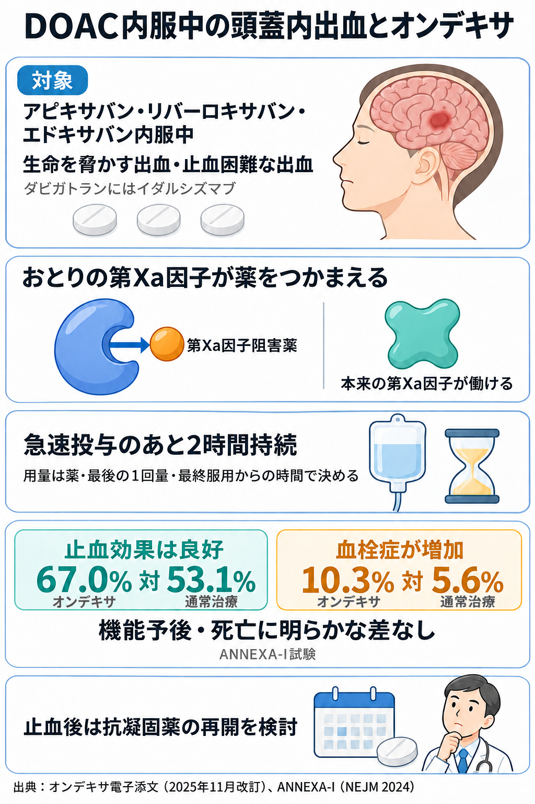

DOAC内服中の頭蓋内出血とオンデキサ
第Xa因子阻害薬を内服中に起きた頭蓋内出血に対する、オンデキサ（アンデキサネット アルファ）の対象・仕組み・投与・効果と注意点を1枚にまとめた図です。
画像をクリック／タップすると原寸で表示します。

図の要点
- 対象：日本の効能はアピキサバン・リバーロキサバン・エドキサバン投与中の、生命を脅かす出血または止血困難な出血です。
- ANNEXA-I試験：止血効果（12時間後の血腫増大35%以下などの複合評価）は67.0%対53.1%と良好でしたが、血栓性イベントは10.3%対5.6%と増え、30日以内の機能予後と死亡に明らかな差はありませんでした。
- 止血後：電子添文は、再開の有益性と再出血のリスクを評価したうえで、できる限り速やかな抗凝固療法の再開を考慮するよう求めています。
出典と注意
オンデキサ静注用200mg 電子添文（2025年11月改訂）、Connolly SJ, et al. N Engl J Med 2024（ANNEXA-I）、脳卒中治療ガイドライン2021〔改訂2025〕に基づいて作成。一般的な医学情報であり、個々の治療方針は主治医と相談してください。